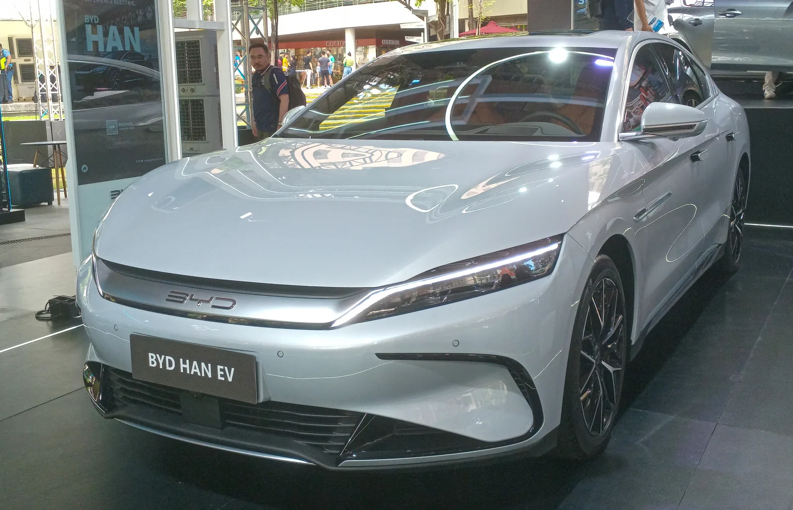
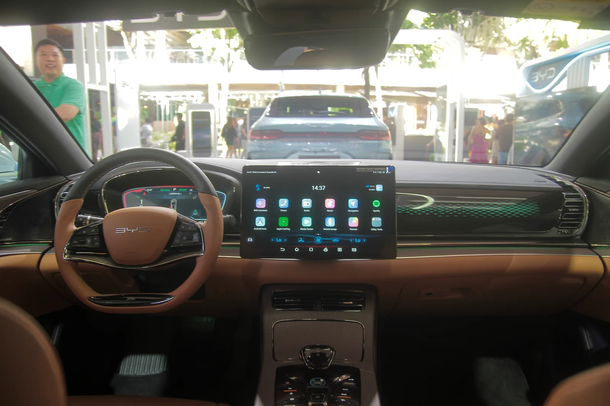
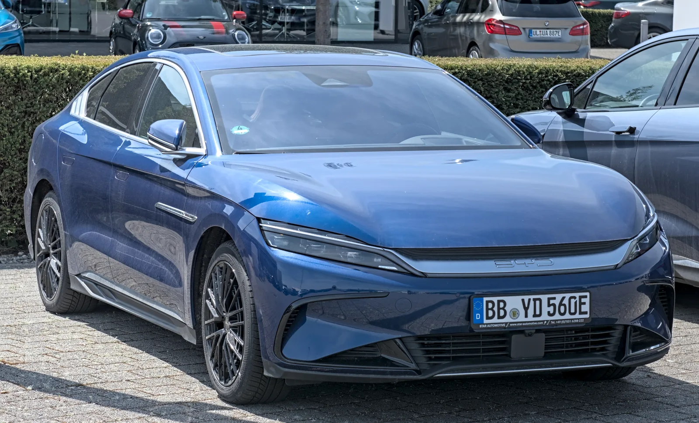

▲ BYD가 왕조 시리즈 플래그십 세단 한(Han) EV의 정식 출시일을 10월 13일로 확정했다 ⓒ Ethan Llamas, Wikimedia Commons (CC BY-SA 4.0)
BYD가 왕조(Dynasty) 시리즈의 플래그십 세단 '그레이트 한(Great Han)' EV의 정식 출시일을 10월 13일로 확정했다. 중국 현지에서는 '다한(Da Han)'으로 불리는 모델로, 국내에서는 통상 '한 EV'로 소개된다. Electrek 보도에 따르면, 지난달 청두 오토쇼에서 사전판매를 시작하며 공개했던 스펙이 이번에 출시일과 함께 재확인됐다. BYD 왕조 시리즈 총괄 루톈(Lu Tian)이 직접 10월 13일 출시를 확인했으며, 한 EV는 BYD가 왕조 패밀리 안에서 처음으로 내놓는 D세그먼트 플래그십 세단으로, 회사의 프리미엄 세단 시장 공략을 상징하는 모델이다.
1. 출시일 10월 13일 — 사전판매에서 정식 출시로

▲ BYD 한 EV는 지난달 청두 오토쇼에서 사전판매를 시작했고, 10월 13일 정식 출시를 앞두고 있다 ⓒ BYD
Electrek에 따르면 BYD는 한 EV의 정식 출시일을 10월 13일로 못박았다. 이 모델은 이미 지난달 청두 오토쇼에서 사전판매(예약)를 시작하며 가격과 핵심 스펙을 먼저 공개한 바 있다. 후륜구동은 프리미엄(24만9,900위안, 약 3만7,200달러)과 플래그십(26만9,900위안, 약 4만200달러) 두 트림으로 나뉘며, 사륜구동 트림 가격은 원문에 공개되지 않았다. 실제 차량은 사전판매 사흘 뒤인 8월 24일 중국 딜러 매장에 먼저 도착한 것으로 확인됐고, 이번 출시일 확정 보도로 실제 인도·판매 개시 시점이 한 달 앞으로 다가왔다는 점이 이번 소식의 핵심이다.
한 EV는 BYD의 왕조 시리즈 안에서 처음 선보이는 D세그먼트 플래그십 세단이다. 왕조 시리즈는 그동안 중형급 세단·SUV 위주로 라인업을 채워왔는데, 이번 한 EV가 그 위에 새로운 최상위 등급을 얹으며 프리미엄 세단 시장을 정조준한다.
2. CLTC 1,008km의 근거 — 블레이드 배터리 2.0과 파워트레인

▲ 후륜구동 모델은 CLTC 기준 최대 1,008km 주행거리를 낸다 ⓒ BYD
1,000km가 넘는 주행거리는 모든 트림 공통의 블레이드 배터리 2.0, 용량 102.326kWh에서 나온다. Electrek이 명시한 대로 1,008km(626마일)는 CLTC(China Light-duty vehicle Test Cycle) 기준이며, 이는 중국 자체 인증 방식으로 국제 기준(WLTP·EPA)보다 관대하게 나오는 경향이 있는 시험 방식이다. 따라서 실제 주행 시 체감 거리는 이보다 짧을 가능성이 크다는 점을 감안해야 한다.
파워트레인은 트림별로 나뉜다. 후륜구동 모델은 370kW 단일모터를 탑재해 위의 1,008km 주행거리를 낸다. 사륜구동 모델은 전륜 모터를 추가해 총 출력 570kW에 달하는 구성이다. 같은 배터리를 쓰고도 출력이 크게 늘어난 만큼 사륜구동의 CLTC 주행거리는 880km(546마일)로, 후륜구동보다는 짧지만 여전히 800km를 훌쩍 넘는 수치다.
| 구분 | 후륜구동(RWD) | 사륜구동(AWD) |
|---|---|---|
| 배터리 | 블레이드 배터리 2.0, 102.326kWh (공통) | |
| 모터 구성 | 단일모터 | 전·후 듀얼모터 |
| 최고출력 | 370kW | 570kW |
| CLTC 주행거리 | 최대 1,008km | 880km |
| 시작가 | 프리미엄 24만9,900위안·플래그십 26만9,900위안 | 비공개 |
3. 5분에 10→70%… '플래시 충전' 기술

▲ BYD 한 EV 실내. 최대 1,500kW급 플래시 충전 기술로 급속 충전 시간을 크게 줄였다 ⓒ Ethan Llamas, Wikimedia Commons (CC BY-SA 4.0)
한 EV의 또 다른 핵심은 '플래시 충전(Flash Charging)' 기술이다. Electrek에 따르면 최대 1,500kW급 충전 성능을 바탕으로 10%에서 70%까지 단 5분, 10%에서 97%까지는 9분이면 충전이 끝난다. 100kWh가 넘는 대용량 배터리를 얹고도 완속에 가까운 시간에 대부분의 충전을 마칠 수 있다는 점에서, BYD가 초급속 충전 인프라 확대와 맞물려 '충전 시간' 자체를 상품성으로 내세우고 있다는 평가가 나온다.
📍 CLTC란?
CLTC(China Light-duty vehicle Test Cycle)는 중국이 자체적으로 운용하는 연비·주행거리 인증 시험 방식이다. 국제적으로 통용되는 WLTP나 미국 EPA 기준보다 저속·정속 구간 비중이 높아 실제 주행 조건보다 우호적인 수치가 나오는 경향이 있다. 이 때문에 같은 차량이라도 CLTC 인증 거리가 WLTP·EPA 대비 10~20%가량 높게 나오는 경우가 흔하다.
4. 모델 S·루시드 에어보다 크다 — 라인업 속 위치

▲ 전장 5,256mm, 휠베이스 3,130mm의 한 EV는 롱휠베이스 벤츠 S클래스와 견줄 만한 크기다 ⓒ BYD
Electrek은 한 EV의 차체 크기도 구체적으로 짚었다. 전장 5,256mm, 전폭 1,999mm, 전고 1,510mm, 휠베이스 3,130mm로, 이는 테슬라 모델 S와 루시드 에어보다 더 크고, 오히려 롱휠베이스 벤츠 S클래스와 견줄 만한 체급이라는 것이다. 순수 전기 세단으로서는 이례적으로 큰 차체를 갖췄다는 의미다.
이런 크기와 스펙은 한 EV가 단순히 '주행거리 긴 전기 세단'이 아니라, BYD가 왕조 시리즈의 최상위 자리에 올려놓은 플래그십이라는 점을 보여준다. 그동안 BYD의 프리미엄 이미지는 상위 브랜드인 양왕(Yangwang)이나 텅스타(Denza)가 주로 담당해왔는데, 이번 한 EV는 왕조 시리즈 본체 안에서도 최상급 세단 포지션을 새로 만들어낸 셈이다.
5. 편의·주행보조 사양과 앞으로의 라인업

▲ 한 EV 계열은 왕조 시리즈 최상위 세단답게 고급 편의 사양을 대거 표준 적용한다 ⓒ Alexander Migl, Wikimedia Commons (CC BY-SA 4.0)
Electrek에 따르면 한 EV 전 트림에는 왕조 시리즈 플래그십 SUV '그레이트 탕(Great Tang)'과 마찬가지로 DiSus-A 듀얼 체임버 에어서스펜션, 후륜조향, 무중력 모드 앞좌석 등 고급 편의 사양이 기본 적용된다. 주행보조 기능은 갓츠 아이 B(God's Eye B) 시스템을 탑재해 내비게이션 연동 자율주행(NOA)과 원격 주차 등을 지원한다. 8월 24일 중국 딜러망에 처음 도착한 실차에서는 31개 스피커의 데비알레(Devialet) 오디오, 원목 트림, D컷 스티어링 휠 등 세부 사양도 CarNewsChina를 통해 확인됐다.
BYD는 순수전기(EV) 모델에 이어 플러그인하이브리드(PHEV) 버전 출시도 준비 중인 것으로 알려졌다. CnEVPost와 CarNewsChina에 따르면 PHEV 트림의 사전판매 일정은 아직 공개되지 않았다. 한 EV는 BYD의 상위 프리미엄 브랜드인 양왕(Yangwang)·텅스타(Denza)와는 별개로, 왕조 시리즈 본체 안에서 그레이트 탕 SUV에 이어 두 번째로 고급화 전략을 이끄는 모델이라는 점에서 의미가 있다.
✅ BYD 한 EV 타임라인
· 2026년 8월 21일(청두 오토쇼): 사전판매 개시, 가격·핵심 스펙 공개
· 2026년 8월 24일: 중국 딜러망에 실차 첫 도착
· 2026년 10월 13일: 정식 출시(Electrek 확인)
· 공통 사양: 블레이드 배터리 2.0 102.326kWh, 최대 1,500kW 플래시 충전
· 트림: 후륜구동(370kW, CLTC 1,008km) / 사륜구동(570kW, CLTC 880km)
6. 요약
BYD가 왕조 시리즈 플래그십 세단 그레이트 한(다한) EV의 정식 출시일을 10월 13일로 확정했다. CLTC 기준 주행거리는 후륜구동 최대 1,008km, 사륜구동 880km이며, 모두 102.326kWh 블레이드 배터리 2.0을 쓴다. 후륜구동은 370kW, 사륜구동은 570kW 출력을 내고, 최대 1,500kW급 플래시 충전으로 10→70% 충전에 단 5분이면 충분하다.
전장 5,256mm·휠베이스 3,130mm의 차체는 테슬라 모델 S·루시드 에어보다 크고 롱휠베이스 벤츠 S클래스에 맞먹는다. 후륜구동은 프리미엄 24만9,900위안·플래그십 26만9,900위안부터 시작하며, DiSus-A 에어서스펜션과 갓츠 아이 B 주행보조 시스템을 기본 갖췄다. BYD는 이 모델을 통해 왕조 시리즈 안에 처음으로 D세그먼트 플래그십 자리를 만들었고, PHEV 버전 추가도 예고했다.